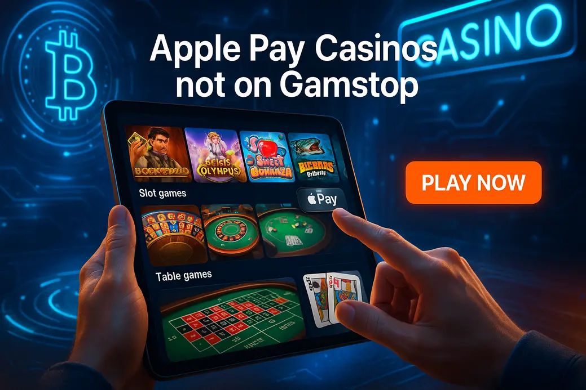

Apple Pay Casinos Not on GamStop

Last Updated: 6 October 2026 | Verified by iGaming experts
Apple Pay casinos not on GamStop are offshore casino sites that let UK players deposit with Apple Pay while operating outside the UK self-exclusion network. The appeal is obvious: Face ID, quick checkout, fewer card details flying about, and no clunky bank form when you just want a few spins.
Honestly, the good ones feel slick. The dodgy ones feel like a spreadsheet wearing a casino skin. The short version: Apple Pay is brilliant for deposits, but you still need to check licensing, withdrawals, limits, bonus terms and safer gambling tools before you tap that shiny button.
Top-5 Best Apple Pay Casinos Not on GamStop
The best Apple Pay casino not on GamStop is the one that does three jobs without drama: takes your deposit cleanly, explains bonus rules in plain English, and pays out without a customer support circus. That sounds basic. In offshore casinos, basic is already half the battle.
For UK players, Apple Pay is mainly about convenience. You approve the payment with Face ID or Touch ID, the casino gets a token rather than your raw card details, and you skip typing long card numbers into a tiny Safari box at 11:40pm. Bloody lovely when it works.
Best Apple Pay Casinos Not on GamStop
Here is the straight-talking version of the shortlist. These brands appeal to UK players looking for an apple pay casino not on gamstop, but none of them is perfect. Offshore freedom comes with extra responsibility, and the boring details matter: wagering, KYC, payout queues, and who handles complaints.
Freshbet Casino
Freshbet has the feel of a betting-first site that also bothered to build a proper casino lobby. The search bar actually works, which sounds minor until you have tried finding Gates of Olympus in a lobby stuffed with 4,000 games and ten near-identical category tabs.
Slot choice is strong, with Pragmatic Play, Hacksaw Gaming, BGaming and live dealer tables from big studios. Deposits are smooth on iPhone, and the cashier does not bury payment buttons behind six pop-ups. The weakness is the bonus language. It is clear enough, but the wagering rules are not light reading, especially if you mix sports and casino promos.
HellSpin Casino
HellSpin is flashier. It looks like someone gave the design team caffeine and a neon budget. The site suits players who want quick access to slots, tournaments, and live tables without feeling like they are using online banking from 2008.
The lobby usually loads quickly on 4G, and popular titles such as Sweet Bonanza at 96.48% RTP, Big Bass Bonanza at 96.71% RTP, and Wanted Dead or a Wild at 96.38% RTP are easy to find. Trade-off? HellSpin can push promotions quite hard. If you hate banners, countdowns and bonus reminders, it gets a bit damn noisy.
Donbet Casino
Donbet works well for players who want casino and sportsbook in one account. You can have a few spins on Book of Dead, check football odds, then jump into Lightning Roulette without the site having a meltdown. That is not glamorous, but it matters.
Apple Pay-style mobile checkout is quick when available through the cashier route, and the account area is clean enough. The weakness is that Donbet’s best value depends on reading promo terms. Some offers have game weighting that makes high-RTP slots less powerful for wagering, so do not assume every spin counts equally. That is where players get caught.
GoldenBet Casino
GoldenBet feels more polished than loud. The layout is neat, game tiles are not microscopic, and the mobile menu behaves itself. By the way, that last part is underrated. A sticky bottom menu that does not cover the spin button is a blessing.
The casino section leans into Pragmatic Play, Evolution, Betsoft and other mainstream providers. Live blackjack tables open cleanly on iPhone 14 and newer screens, with sensible touch targets for bet chips. Weakness? Verification can take longer during busy weekends, so do not leave KYC until after a decent win. Upload documents early if you plan to withdraw.
VeloBet Casino
VeloBet is the tidy all-rounder. It has a modern sportsbook look, a decent casino tab, and a cashier that is not a complete maze. UK players searching for apple pay not on gamstop casino uk options often like VeloBet because it feels familiar without being UKGC-licensed.
The downside is the payment journey on smaller screens. On an iPhone SE, the buttons are readable, but the cashier steps feel stacked and slightly fiddly. On bigger screens it is smoother. Game-wise, the mix is solid: slots, live roulette, blackjack, crash games, and instant-win titles. Not groundbreaking, but reliable.
Why UK Players Look for Apple Pay Casinos Outside of GamStop
Let’s be blunt. UK players look offshore for bigger bonuses, fewer restrictions, broader payment choices, and access after GamStop registration. That last bit is serious. If you joined GamStop because gambling was harming you, using offshore casinos to bypass it is a bad idea. No bonus is worth digging that hole deeper.
For players who are not self-excluded and understand the risks, the draw is convenience. Apple Pay sits right in that sweet spot: fast, private, and already built into the phone you use every day.
The Speed of Face ID and Touch ID
Apple Pay is built for impatient humans. You choose the amount, confirm with Face ID or Touch ID, and the deposit lands in the casino balance quickly when the payment processor accepts it. No card number. No expiry date. No hunting for a CVV while your phone dims.
On iPhone, the best offshore casino cashiers keep the Apple Pay button high on the page, with a clear minimum deposit shown before authentication. The bad ones hide fees until the final tap. That is bollocks, and it is a sign to slow down.
Enhanced Privacy Through Tokenisation
Apple Pay uses tokenisation, meaning the merchant does not receive your real card number. Instead, the transaction uses a device-specific token. In plain English: less sensitive card data gets passed through the casino cashier.
That does not make gambling anonymous. Casinos still run KYC, payment processors still record transactions, and banks still see spending categories. But tokenisation is a genuine privacy upgrade compared with typing full card details into a site you barely know.
Freedom from Credit Card Bans
UK rules ban credit card gambling with UK-licensed operators. Offshore sites work under different rules, but Apple Pay funding still depends on the card behind your wallet and the processor accepting it. If your Apple Pay wallet uses a UK debit card, it has a better chance than a credit card.
Useful payment mix for offshore play: 💳 Debit Card, 🍏 Apple Pay, ₿ Bitcoin, ₮ Tether, 🏦 Bank Transfer, 💼 E-wallet. Keep one thing in mind: using borrowed money for gambling is a rotten idea. If the money is not yours, do not stake it.
Payments, Limits, and Fees: Using Apple Pay Offshore
Payment pages at non-GamStop casinos have improved a lot. Five years ago, half of them looked like a dodgy pop-up. Now the better sites use cleaner cashier flows, stronger encryption, and payment routing that works fine in Safari and Chrome on iOS.
Still, Apple Pay offshore is not identical to buying trainers online. Banks can decline gambling-coded payments, casinos can set their own minimums, and withdrawal methods differ from deposit methods.
How to Deposit: Step-by-Step
- Create your casino account with accurate details. Use your real name, date of birth and address, or KYC becomes a headache later.
- Open the cashier and choose Apple Pay if shown. If it is not shown, check debit card or payment gateway options.
- Enter a sensible deposit amount. Start small, such as £20, before sending a larger bankroll.
- Confirm using Face ID or Touch ID. Watch for the final amount before approval.
- Check your balance and bonus status. If you claimed a bonus, read the wagering counter before spinning.
Withdrawal Flows
Apple Pay is mainly a deposit rail. Withdrawals usually move through debit card, bank transfer, crypto, or e-wallet. A strong casino explains this before you deposit. A weak one leaves you guessing until cashout, which is deeply annoying.
Verification is the big gatekeeper. Expect proof of identity, proof of address, and proof of payment ownership. A passport or driving licence plus a recent utility bill or bank statement usually does the job. The best sites approve documents in under 24 hours. Slower sites take two or three days, especially after major sporting weekends.
Table: Payment Limits & Payout Speeds
| Method | Common Deposit Range | Withdrawal Use | Speed Notes | Watch-Out |
|---|---|---|---|---|
| Apple Pay | £10–£2,000 | Rare for payouts | Deposits are near-instant after approval | Bank can decline gambling merchant codes |
| Debit Card | £10–£5,000 | Yes | Withdrawals often 1–3 banking days | Name must match casino account |
| Bitcoin | £20–£10,000+ | Yes | Fast when processed; one test Bitcoin withdrawal landed in 6 hours | Network fees and price swings |
| Tether | £20–£10,000+ | Yes | Fast and stable-value compared with BTC | Wrong network selection can lose funds |
| Bank Transfer | £20–£5,000 | Yes | Often 1–5 banking days | Extra checks for larger wins |
Security and Licensing: How We Ensure Safety
Offshore casinos are not all equal. Some run decent platforms with proper encryption, game testing and support. Others are a mess with a bonus slapped on top. Our safety check focuses on three things: licence status, technical security, and how the site treats withdrawals when players win.
No offshore licence gives the same protection as the UKGC. That is the trade-off. You get more flexibility, but fewer local safeguards. Anyone pretending otherwise is selling fairy dust.
1. Curaçao eGaming (CEG)
Curaçao licensing is common among non-GamStop casinos. It allows international operators to offer casino games, sportsbook markets, crypto payments and larger bonus structures. The better Curaçao sites publish company details, licence information, game providers and dispute routes clearly.
The weakness is enforcement. Curaçao has improved its framework, but player protection still varies by operator. A licence badge means “check further”, not “trust blindly”. Look for clear terms, withdrawal limits, and provider legitimacy before depositing.
2. Anjouan and Costa Rica
Anjouan licences have become more visible in offshore iGaming, while Costa Rica registrations appear on some casino sites as business incorporations rather than strict gambling oversight. In simple terms, these setups can be legitimate, but the operator’s behaviour matters more than the badge.
If a casino has Anjouan or Costa Rica details, check whether it lists a real company name, support channels, AML policy, and responsible gambling page. If all you see is a logo and vague legal text, treat it with caution.
3. Technical Security
Good casinos use HTTPS encryption, secure cashier gateways, two-factor authentication, session timeouts, and proper payment tokenisation. On mobile, the login should not keep you signed in forever. Convenient, yes. Unsafe, also yes.
Small detail worth checking: password reset emails. If they arrive instantly, use secure links, and expire quickly, that is a good sign. If the reset email looks like it was written in 2011 and lands in spam with broken formatting, the back end needs work.
Popular Games at Apple Pay Casinos with No GamStop Restrictions
The strongest Apple Pay casinos offshore do not just offer payment convenience. They offer the games UK players already know: Pragmatic Play slots, Play’n GO classics, Evolution live tables, crash games, bingo rooms and instant wins. The trick is finding a lobby that loads fast and lets you filter by provider, volatility and new releases.
On mobile, this is where UX matters. The spin button is a menace on mobile if the site places sticky banners too low. A good lobby keeps bonus pop-ups away from the game frame and lets you rotate cleanly into landscape for live dealer tables.
Non GamStop Slots
Slots are the main event. Popular picks include Big Bass Bonanza by Pragmatic Play, with 96.71% RTP and high volatility, Book of Dead by Play’n GO at 96.21% RTP and high volatility, and Starburst by NetEnt at 96.09% RTP with low-to-medium volatility.
If you want chaos, Wanted Dead or a Wild by Hacksaw Gaming brings brutal high volatility and a 96.38% RTP version on many sites. The weakness? It can eat a £50 balance with rude speed. If you want a calmer session, Gonzo’s Quest at 95.97% RTP gives steadier bonus-chase energy.
Live Dealer Specialist Rooms
Live casino is where a good phone screen earns its keep. Evolution’s Lightning Roulette, Crazy Time, Monopoly Live and Infinite Blackjack dominate many offshore lobbies. Playtech and Pragmatic Live also show up with roulette, baccarat and blackjack variants.
Mobile UX detail: portrait mode is fine for blackjack, but roulette feels better in landscape because chip controls need space. On 4G, tables load well if your signal is stable, but Wi-Fi gives fewer stream drops. If the dealer video stutters while betting is open, skip the round. Do not chase a bet into a laggy countdown.
Bingo & Mini Games
Bingo, crash games, plinko, mines and instant-win titles fill the gaps between slots and tables. They are quick, colourful and dangerously easy to replay. Aviator and Spaceman are popular crash titles, while mines games give that “one more tile” itch.
On mobile, touch targets matter here. A mines grid with tiny squares is a pain on smaller iPhones, especially one-handed. Better casinos leave enough spacing so you do not tap the wrong tile with your thumb. On 4G, these games behave better than live tables because there is less video streaming, but delays still affect cash-out timing in crash games.
Responsible Gambling & Player Protection
This bit is not decoration. Non-GamStop casinos sit outside the UK self-exclusion net, so you need your own guardrails. If gambling no longer feels fun, or you are using offshore sites to dodge a block you set for yourself, stop. That is not a clever loophole. That is a warning light.
Set limits before you deposit, not after a bad run. A calm decision at £0 is smarter than a panicked decision after five dead bonus rounds on Sweet Bonanza.
Internal Tools
Decent offshore casinos offer deposit limits, loss limits, wagering limits, time-outs, cooling-off periods and account closure. The tool names vary, but the idea is the same: put friction between you and tilt.
Use them early. A £50 daily deposit cap feels boring until it saves you from firing another £200 at a high-volatility slot after midnight. Also check whether limits apply instantly or after a delay. Player-friendly sites apply limit reductions right away and make increases wait.
Independent Support
If gambling is causing stress, debt, secrecy or arguments, speak to a support service and block access at device or banking level. Bank gambling blocks, transaction limits, blocking software and trusted-person accountability all help.
Practical move: remove saved cards from Apple Wallet if you are trying to take a proper break. Face ID makes payments frictionless, and friction is exactly what you need when control is slipping.
Conclusion: The Verdict on Apple Pay Casinos Not on GamStop
Apple Pay casinos not on GamStop work best for experienced UK players who want fast mobile deposits, strong slot lobbies, live casino choice and offshore bonus flexibility. The convenience is real. Face ID deposits feel slick, tokenisation adds privacy, and the best sites have modern cashier flows that do not make you want to launch your phone.
The trade-off is also real. You are outside UKGC protection, withdrawals rarely return through Apple Pay, and bonus terms can be sharper than they look. Pick casinos with clear licensing, fair payout rules, sensible limits and support that answers actual questions instead of copy-paste sludge.
The short version: use Apple Pay for speed, use limits for control, and use your head before chasing any bonus. If a casino makes deposits easy but withdrawals confusing, walk away.
FAQ: Apple Pay Casinos Not on GamStop
Yes, UK players can access offshore casinos, but these sites are not licensed by the UKGC. Practical tip: check the casino licence, terms and withdrawal rules before depositing.
No, in most cases Apple Pay is used for deposits rather than withdrawals. Practical tip: verify a backup payout method such as debit card, bank transfer or crypto before you play.
Usually the casino does not add an Apple Pay fee, but banks and payment processors can affect costs or approvals. Practical tip: make a small test deposit before sending a larger amount.
The best choice is a licensed offshore casino with fast deposits, clear bonuses, proper KYC and reliable withdrawals. Practical tip: avoid any site that explains deposits clearly but hides payout limits.
Some are safe enough for informed players, while others are not worth your money. Practical tip: look for HTTPS, known providers, published terms, payment security, and real responsible gambling tools.
Yes, Apple Pay works on compatible Apple devices when the casino cashier and payment gateway support it. Practical tip: iPhone Safari gives the smoothest Face ID flow, while desktop can need extra confirmation.
Safer Gambling: 18+ only. Gambling should be entertainment, not income. If you feel out of control, take a break and get support before placing another bet.
BeGambleAware GamCare UKGC GamStop